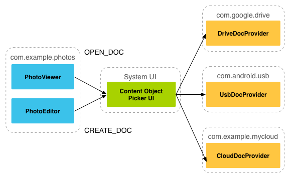

一、本节引言：
学完上一节，相信你已经知道如何去使用系统提供的ContentProvider或者自定义ContentProvider了， 已经基本满足日常开发的需求了，有趣的是，我在官方文档上看到了另外这几个Provider：

Calendar Provider：日历提供者，就是针对针对日历相关事件的一个资源库，通过他提供的API，我们 可以对日历，时间，会议，提醒等内容做一些增删改查！
Contacts Provider：联系人提供者，这个就不用说了，这个用得最多~后面有时间再回头翻译下这篇文章吧！
Storage Access Framework(SAF)：存储访问框架，4.4以后引入的一个新玩意，为用户浏览手机中的 存储内容提供了便利，可供访问的内容不仅包括：文档，图片，视频，音频，下载，而且包含所有由 由特定ContentProvider（须具有约定的API）提供的内容。不管这些内容来自于哪里，不管是哪个应 用调用浏览系统文件内容的命令，系统都会用一个统一的界面让你去浏览。
其实就是一个内置的应用程序，叫做DocumentsUI，因为它的IntentFilter不带有LAUNCHER，所以我们并没有 在桌面上找到这个东东！嘿嘿，试下下面的代码，这里我们选了两个手机来对比： 分别是4.2的Lenovo S898T 和 5.0.1的Nexus 5做对比，执行下述代码：
Intent intent = new Intent(Intent.ACTION_OPEN_DOCUMENT);
intent.addCategory(Intent.CATEGORY_OPENABLE);
intent.setType("image/*");
startActivity(intent);
下面是运行结果：
右面这个就是4.4给我们带来的新玩意了，一般我们获取文件Url的时候就可以用到它~ 接下来简单的走下文档吧~
二、简单走下文档：
1）SAF框架的组成：
Document provider：一个特殊的ContentProvider，让一个存储服务(比如Google Drive)可以 对外展示自己所管理的文件。它是DocumentsProvider的子类，另外，document-provider的存储格式 和传统的文件存储格式一致，至于你的内容如何存储，则完全决定于你自己，Android系统已经内置了几个 这样的Document provider，比如关于下载，图片以及视频的Document provider！Client app：一个普通的客户端软件，通过触发ACTION_OPEN_DOCUMENT 和/或 ACTION_CREATE_DOCUMENT就可以接收到来自于Document provider返回的内容，比如选择一个图片， 然后返回一个Uri。Picker：类似于文件管理器的界面，而且是系统级的界面，提供额访问客户端过滤条件的 Document provider内容的通道，就是前面说的那个DocumentsUI程序！
一些特性：
- 用户可以浏览所有document provider提供的内容，而不仅仅是单一的应用程序
- 提供了长期、持续的访问document provider中文件的能力以及数据的持久化， 用户可以实现添加、删除、编辑、保存document provider所维护的内容
- 支持多用户以及临时性的内容服务，比如USB storage providers只有当驱动安装成功才会出现
2）概述：
SAF的核心是实现了DocumentsProvider的子类，还是一个ContentProvider。在一个document provider 中是以传统的文件目录树组织起来的：

3）流程图：
如上面所述，document provider data是基于传统的文件层次结构的，不过那只是对外的表现形式， 如何存储你的数据，取决于你自己，只要你对海外的接口能够通过DocumentsProvider的api访问就可以。 下面的流程图展示了一个photo应用使用SAF可能的结构：

分析：
从上图，我们可以看出Picker是链接调用者和内容提供者的一个桥梁！他提供并告诉调用者，可以选择 哪些内容提供者，比如这里的DriveDocProvider，UsbDocProvider，CloundDocProvider。
当客户端触发了ACTION_OPEN_DOCUMENT或ACTION_CREATE_DOCUMENT的Intent，就会发生上述交互。 当然我们还可以在Intent中增加过滤条件，比如限制MIME type的类型为"image"!
就是上面这些东西，如果你还安装了其他看图的软件的话，也会在这里看到！ 简单点说就是：客户端发送了上面两种Action的Intent后，会打开Picker UI，在这里会显示相关可用的 Document Provider，供用户选择，用户选择后可以获得文件的相关信息！
4）客户端调用，并获取返回的Uri
实现代码如下：
public class MainActivity extends AppCompatActivity implements View.OnClickListener {
private static final int READ_REQUEST_CODE = 42;
@Override
protected void onCreate(Bundle savedInstanceState) {
super.onCreate(savedInstanceState);
setContentView(R.layout.activity_main);
Button btn_show = (Button) findViewById(R.id.btn_show);
btn_show.setOnClickListener(this);
}
@Override
public void onClick(View v) {
Intent intent = new Intent(Intent.ACTION_OPEN_DOCUMENT);
intent.addCategory(Intent.CATEGORY_OPENABLE);
intent.setType("image/*");
startActivityForResult(intent, READ_REQUEST_CODE);
}
@Override
protected void onActivityResult(int requestCode, int resultCode, Intent data) {
if (requestCode == READ_REQUEST_CODE && resultCode == Activity.RESULT_OK) {
Uri uri;
if (data != null) {
uri = data.getData();
Log.e("HeHe", "Uri: " + uri.toString());
}
}
}
}
运行结果： 比如我们选中那只狗，然后Picker UI自己会关掉，然后Logcat上可以看到这样一个uri:

5）根据uri获取文件参数
核心代码如下：
public void dumpImageMetaData(Uri uri) {
Cursor cursor = getContentResolver()
.query(uri, null, null, null, null, null);
try {
if (cursor != null && cursor.moveToFirst()) {
String displayName = cursor.getString(
cursor.getColumnIndex(OpenableColumns.DISPLAY_NAME));
Log.e("HeHe", "Display Name: " + displayName);
int sizeIndex = cursor.getColumnIndex(OpenableColumns.SIZE);
String size = null;
if (!cursor.isNull(sizeIndex)) {
size = cursor.getString(sizeIndex);
}else {
size = "Unknown";
}
Log.e("HeHe", "Size: " + size);
}
}finally {
cursor.close();
}
}
运行结果： 还是那只狗，调用方法后会输入文件名以及文件大小，以byte为单位

6）根据Uri获得Bitmap
核心代码如下：
private Bitmap getBitmapFromUri(Uri uri) throws IOException {
ParcelFileDescriptor parcelFileDescriptor =
getContentResolver().openFileDescriptor(uri, "r");
FileDescriptor fileDescriptor = parcelFileDescriptor.getFileDescriptor();
Bitmap image = BitmapFactory.decodeFileDescriptor(fileDescriptor);
parcelFileDescriptor.close();
return image;
}
运行结果：
7）根据Uri获取输入流
核心代码如下：
private String readTextFromUri(Uri uri) throws IOException {
InputStream inputStream = getContentResolver().openInputStream(uri);
BufferedReader reader = new BufferedReader(new InputStreamReader(
inputStream));
StringBuilder stringBuilder = new StringBuilder();
String line;
while ((line = reader.readLine()) != null) {
stringBuilder.append(line);
}
fileInputStream.close();
parcelFileDescriptor.close();
return stringBuilder.toString();
}
上述的内容只告诉你通过一个Uri你可以知道什么，而Uri的获取则是通过SAF得到的！
8） 创建新文件以及删除文件：
创建文件：
private void createFile(String mimeType, String fileName) {
Intent intent = new Intent(Intent.ACTION_CREATE_DOCUMENT);
intent.addCategory(Intent.CATEGORY_OPENABLE);
intent.setType(mimeType);
intent.putExtra(Intent.EXTRA_TITLE, fileName);
startActivityForResult(intent, WRITE_REQUEST_CODE);
}
可在onActivityResult()中获取被创建文件的uri
删除文件：
前提是Document.COLUMN_FLAGS包含SUPPORTS_DELETE
DocumentsContract.deleteDocument(getContentResolver(), uri);
9）编写一个自定义的Document Provider
如果你希望自己应用的数据也能在documentsui中打开，你就需要写一个自己的document provider。 下面介绍自定义DocumentsProvider的步骤：
- API版本为19或者更高
- 在manifest.xml中注册该Provider
- Provider的name为类名加包名，比如：
com.example.android.storageprovider.MyCloudProvider - Authority为包名+provider的类型名，如：
com.example.android.storageprovider.documents - android:exported属性的值为ture
下面是Provider的例子写法：
<manifest... >
...
<uses-sdk
android:minSdkVersion="19"
android:targetSdkVersion="19" />
....
<provider
android:name="com.example.android.storageprovider.MyCloudProvider"
android:authorities="com.example.android.storageprovider.documents"
android:grantUriPermissions="true"
android:exported="true"
android:permission="android.permission.MANAGE_DOCUMENTS"
android:enabled="@bool/atLeastKitKat">
<intent-filter>
<action android:name="android.content.action.DOCUMENTS_PROVIDER" />
</intent-filter>
</provider>
</application>
</manifest>
10 )DocumentsProvider的子类
至少实现如下几个方法：
- queryRoots()
- queryChildDocuments()
- queryDocument()
- openDocument()
还有些其他的方法，但并不是必须的。下面演示一个实现访问文件（file）系统的 DocumentsProvider的大致写法。
Implement queryRoots
@Override
public Cursor queryRoots(String[] projection) throws FileNotFoundException {
// Create a cursor with either the requested fields, or the default
// projection if "projection" is null.
final MatrixCursor result =
new MatrixCursor(resolveRootProjection(projection));
// If user is not logged in, return an empty root cursor. This removes our
// provider from the list entirely.
if (!isUserLoggedIn()) {
return result;
}
// It's possible to have multiple roots (e.g. for multiple accounts in the
// same app) -- just add multiple cursor rows.
// Construct one row for a root called "MyCloud".
final MatrixCursor.RowBuilder row = result.newRow();
row.add(Root.COLUMN_ROOT_ID, ROOT);
row.add(Root.COLUMN_SUMMARY, getContext().getString(R.string.root_summary));
// FLAG_SUPPORTS_CREATE means at least one directory under the root supports
// creating documents. FLAG_SUPPORTS_RECENTS means your application's most
// recently used documents will show up in the "Recents" category.
// FLAG_SUPPORTS_SEARCH allows users to search all documents the application
// shares.
row.add(Root.COLUMN_FLAGS, Root.FLAG_SUPPORTS_CREATE |
Root.FLAG_SUPPORTS_RECENTS |
Root.FLAG_SUPPORTS_SEARCH);
// COLUMN_TITLE is the root title (e.g. Gallery, Drive).
row.add(Root.COLUMN_TITLE, getContext().getString(R.string.title));
// This document id cannot change once it's shared.
row.add(Root.COLUMN_DOCUMENT_ID, getDocIdForFile(mBaseDir));
// The child MIME types are used to filter the roots and only present to the
// user roots that contain the desired type somewhere in their file hierarchy.
row.add(Root.COLUMN_MIME_TYPES, getChildMimeTypes(mBaseDir));
row.add(Root.COLUMN_AVAILABLE_BYTES, mBaseDir.getFreeSpace());
row.add(Root.COLUMN_ICON, R.drawable.ic_launcher);
return result;
}
Implement queryChildDocuments
public Cursor queryChildDocuments(String parentDocumentId, String[] projection,
String sortOrder) throws FileNotFoundException {
final MatrixCursor result = new
MatrixCursor(resolveDocumentProjection(projection));
final File parent = getFileForDocId(parentDocumentId);
for (File file : parent.listFiles()) {
// Adds the file's display name, MIME type, size, and so on.
includeFile(result, null, file);
}
return result;
}
Implement queryDocument
@Override
public Cursor queryDocument(String documentId, String[] projection) throws
FileNotFoundException {
// Create a cursor with the requested projection, or the default projection.
final MatrixCursor result = new
MatrixCursor(resolveDocumentProjection(projection));
includeFile(result, documentId, null);
return result;
}
好吧，文档中的内容大概就是这些了： 一开始是想自己翻译的，后来在泡在网上的日子上找到了这一篇文档的中文翻译，就偷下懒了~
中文翻译链接：android存储访问框架Storage Access Framework
四、Android 4.4 获取资源路径问题：
其实这个SAF我们用得较多的地方无非是获取图片的Uri而已，而从上面的例子我们也发现了： 我们这样获取的链接是这样的：
content://com.android.providers.media.documents/document/image%3A69983
这样的链接，我们直接通过上面的方法获得uri即可！
当然，这个是4.4 或者以上版本的~！
如果是以前的版本：uri可能是这样的：
content://media/external/images/media/image%3A69983
这里贴下在别的地方看到的一个全面的方案，原文链接：Android4.4中获取资源路径问题
public static String getPath(final Context context, final Uri uri) {
final boolean isKitKat = Build.VERSION.SDK_INT >= Build.VERSION_CODES.KITKAT;
// DocumentProvider
if (isKitKat && DocumentsContract.isDocumentUri(context, uri)) {
// ExternalStorageProvider
if (isExternalStorageDocument(uri)) {
final String docId = DocumentsContract.getDocumentId(uri);
final String[] split = docId.split(":");
final String type = split[0];
if ("primary".equalsIgnoreCase(type)) {
return Environment.getExternalStorageDirectory() + "/" + split[1];
}
// TODO handle non-primary volumes
}
// DownloadsProvider
else if (isDownloadsDocument(uri)) {
final String id = DocumentsContract.getDocumentId(uri);
final Uri contentUri = ContentUris.withAppendedId(
Uri.parse("content://downloads/public_downloads"), Long.valueOf(id));
return getDataColumn(context, contentUri, null, null);
}
// MediaProvider
else if (isMediaDocument(uri)) {
final String docId = DocumentsContract.getDocumentId(uri);
final String[] split = docId.split(":");
final String type = split[0];
Uri contentUri = null;
if ("image".equals(type)) {
contentUri = MediaStore.Images.Media.EXTERNAL_CONTENT_URI;
} else if ("video".equals(type)) {
contentUri = MediaStore.Video.Media.EXTERNAL_CONTENT_URI;
} else if ("audio".equals(type)) {
contentUri = MediaStore.Audio.Media.EXTERNAL_CONTENT_URI;
}
final String selection = "_id=?";
final String[] selectionArgs = new String[] {
split[1]
};
return getDataColumn(context, contentUri, selection, selectionArgs);
}
}
// MediaStore (and general)
else if ("content".equalsIgnoreCase(uri.getScheme())) {
return getDataColumn(context, uri, null, null);
}
// File
else if ("file".equalsIgnoreCase(uri.getScheme())) {
return uri.getPath();
}
return null;
}
/**
* Get the value of the data column for this Uri. This is useful for
* MediaStore Uris, and other file-based ContentProviders.
*
* @param context The context.
* @param uri The Uri to query.
* @param selection (Optional) Filter used in the query.
* @param selectionArgs (Optional) Selection arguments used in the query.
* @return The value of the _data column, which is typically a file path.
*/
public static String getDataColumn(Context context, Uri uri, String selection,
String[] selectionArgs) {
Cursor cursor = null;
final String column = "_data";
final String[] projection = {
column
};
try {
cursor = context.getContentResolver().query(uri, projection, selection, selectionArgs,
null);
if (cursor != null && cursor.moveToFirst()) {
final int column_index = cursor.getColumnIndexOrThrow(column);
return cursor.getString(column_index);
}
} finally {
if (cursor != null)
cursor.close();
}
return null;
}
/**
* @param uri The Uri to check.
* @return Whether the Uri authority is ExternalStorageProvider.
*/
public static boolean isExternalStorageDocument(Uri uri) {
return "com.android.externalstorage.documents".equals(uri.getAuthority());
}
/**
* @param uri The Uri to check.
* @return Whether the Uri authority is DownloadsProvider.
*/
public static boolean isDownloadsDocument(Uri uri) {
return "com.android.providers.downloads.documents".equals(uri.getAuthority());
}
/**
* @param uri The Uri to check.
* @return Whether the Uri authority is MediaProvider.
*/
public static boolean isMediaDocument(Uri uri) {
return "com.android.providers.media.documents".equals(uri.getAuthority());
}
五、本节小结：
好的，关于本节android存储访问框架SAF就到这里吧，没什么例子，后面用到再深入研究吧， 知道下就好，4.4后获取文件路径就简单多了~